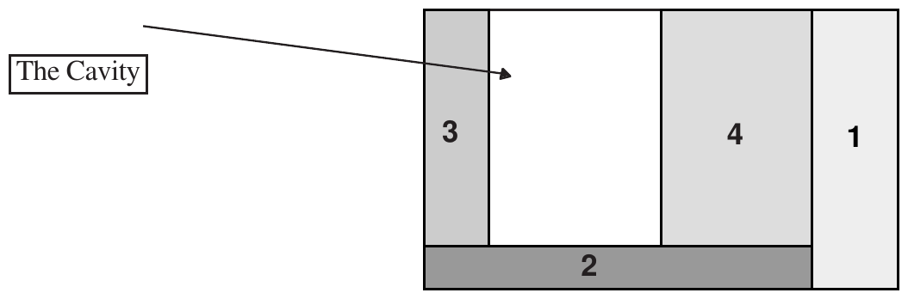
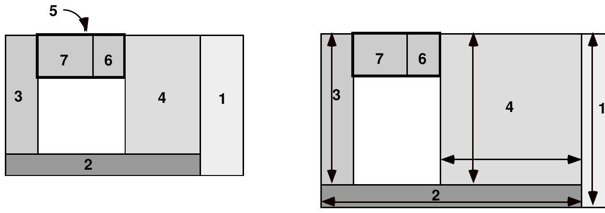

The Twenty-first Annual ACM International Collegiate Programming Contest Finals · Problem H
Elements of graphical user interfaces include such things as buttons, text boxes, scroll bars, drop-down menus and scrollable list boxes. Each is considered to be a special kind of object called a widget. Where these widgets are placed, how much space they are allocated, and how they change size constitutes the geometry of a window.
One geometry management scheme uses special rectangular widgets called frames to contain and thus group other widgets. A frame is a parent if some or all of its own space is allocated to additional frames, which are its children. The frame which has no parent is called the root frame; its size is specified by the user (in the input data). This problem requires that you determine the allocation of space to, and the position of frames placed in root frames of various sizes.
The cavity in a frame is the space in the frame that is not occupied by its children. When a new child frame is created, it is allocated an entire horizontal strip along the top or bottom edge of the cavity (this is called a horizontal child) or an entire vertical strip along the right or left edge of the cavity (this is called a vertical child). Thus, as a result of creating a new child, the cavity becomes smaller, but it remains rectangular. The process of placing children inside the enclosing frame is called packing. Children are positioned in the cavity according to the order in which they are packed.
The figure below shows the child frames of a parent frame. Frame 1 along the right edge was packed first, then frame 2 along the bottom edge, frame 3 along the left edge, and finally frame 4 along the right edge. The cavity, shown in white, contains available space for packing subsequent child frames.

Each frame covers a rectangular grid of pixels. If the root frame covers c columns and r rows of pixels, then the pixel in the top left corner is at coordinate (0,0) and the pixel in the lower right corner is at coordinate (c−1, r−1). The position of a frame is specified by the coordinates of its upper left corner pixel and its lower right corner pixel.
Each frame has minimum dimensions determined by an input parameter d and the minimum dimensions of its children. A frame must be at least large enough to pack all of its children. The minimum dimensions of each frame are determined as follows:
| Packing Side | Frame Type | Minimum Width | Minimum Height |
|---|---|---|---|
| Right or left | Vertical | Maximum of d and the width necessary for the frame’s children | Maximum of 1 and the height necessary for the frame’s children |
| Bottom or top | Horizontal | Maximum of 1 and the width necessary for the frame’s children | Maximum of d and the height necessary for the frame’s children |
When a frame is larger than the minimum dimensions just specified, the additional interior space is apportioned to its children and/or its cavity. Each frame has an expansion flag (which is an input parameter) that, when set, indicates a vertical frame can grow wider or a horizontal frame can grow taller. For example, a frame with its expansion flag set, allocated space along the top of the cavity, can grow taller, with the extra height extending downward.
The distribution of additional horizontal space in a frame is handled as follows. Let x be the number of horizontal pixels by which the parent frame exceeds its minimum width. If n, the number of the vertical children in the frame with their expansion flags set, is non-zero, then the x pixels are distributed among the n vertical children. If q is the quotient of x divided by n and r is the remainder, then each of the n vertical frames grows wider by q pixels and the first r of them that were packed in the frame grow wider by 1 pixel in addition to the q. If n is zero, then none of the vertical children grow wider, and the x pixels are added to the width of the cavity. In either case, the horizontal children in the enlarged frame become wider, if necessary, in such a manner as to ensure the single cavity remains rectangular.
The distribution of additional vertical space in a parent frame to its children and/or its cavity is handled in a manner similar to that used to distribute additional horizontal space, with the appropriate change in direction of growth. Only the horizontal children with their expansion flags set grow taller to utilize the additional vertical pixels, and if none of the horizontal children have their expansion flags set, the additional pixels are added to the height of the cavity. As expected, the vertical children also become taller, if necessary, to ensure the rectangular and uniqueness properties of the cavity.
In the next illustration, the root frame on the left has been enlarged to yield the one on the right. Frames 6 and 7 are horizontal and vertical children, respectively, of frame 5. Only frames 4, 6 and 7 have their expansion flags set. In the frame on the right, the additional horizontal and vertical space has been distributed to the children so as to result in the growth indicated by the arrows. Note that frame 7 does not change size because no room is available for expansion in its parent, frame 5. Frame 6 does not change size for the same reason.

The input consists of a sequence of root frames, their descendants, and different potential root frame sizes. Each item in the sequence corresponding to a single root has the following format:
M N
M is the total number of frames excluding the root. N is the number of different root sizes (both are positive integers). followed by M lines of the form:
n p s d e
where: n is the name of the frame (a positive integer); p is the name of the parent (where 0 is the root frame); s is one of the characters “L”, “R”, “T”, and “B” indicating packing side; d is the minimum dimension (a positive integer); and e is 0 or 1, where 0 means the expansion flag is cleared, 1 means it is set; followed by N lines of the form:
c r
where c is the number of columns of pixels, and r is the number of rows of pixels in the root frame (both positive integers).
Root frames are not listed. Frame numbers for a given root are distinct. Children of a frame will not appear in the input before their parents. Frames are packed in the order in which they appear in the input. The end of input is signified by a line with M and N both 0.
Begin the output of each root by writing its record number (1 for the first, 2 for the second, etc.). For each size corresponding to that root, write the size (rows × columns) and then list the name of each frame along with the coordinates of its upper left and lower right corners. List the frames in the order in which they are packed in their parents, with the root’s first child and its descendants first, the second child and its descendants second, and so on. If the root size is too small to pack its frames, print the message “is too small” instead of attempting to list the frames. Separate output for different root sizes by a line of dashes.
7 1 1 0 R 50 0 2 0 B 10 0 3 0 L 40 0 4 0 R 20 1 5 0 T 30 0 6 5 R 20 0 7 5 L 10 1 1000 1000 2 2 1 0 R 100 1 2 0 T 30 1 100 50 200 100 0 0
Root Frame #1 -------------------------------------------- Display: 1000 X 1000 Frame: 1 (950,0) (999,999) Frame: 2 (0,990) (949,999) Frame: 3 (0,0) (39,989) Frame: 4 (70,0) (949,989) Frame: 5 (40,0) (69,29) Frame: 6 (50,0) (69,29) Frame: 7 (40,0) (49,29) -------------------------------------------- Root Frame #2 -------------------------------------------- Display: 100 X 50 is too small -------------------------------------------- Display: 200 X 100 Frame: 1 (1,0) (199,99) Frame: 2 (0,0) (0,99) --------------------------------------------